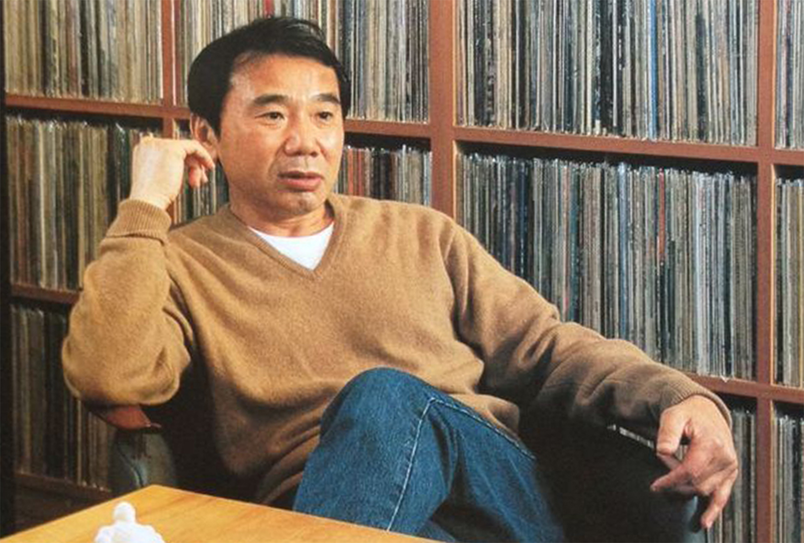

Murakami Haruki, born January 12, 1949 is a Japanese writer. His novels, essays, and short stories have been bestsellers in Japan as well as internationally, with his work translated into 50 languages and have sold millions of copies outside Japan. He has received numerous awards for his work, including the Gunzou Prize for New Writers, the World Fantasy Award, the Frank O'Connor International Short Story Award, the Franz Kafka Prize, and the Jerusalem Prize.
